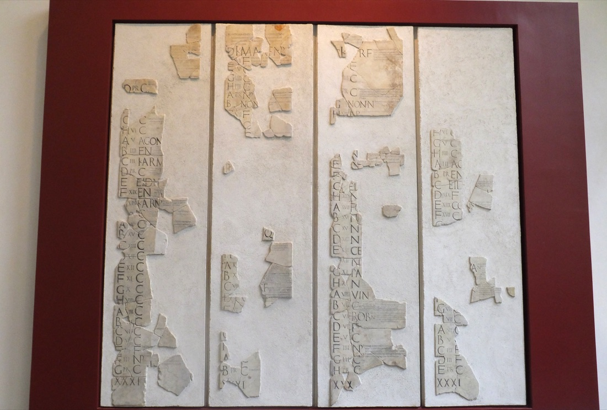
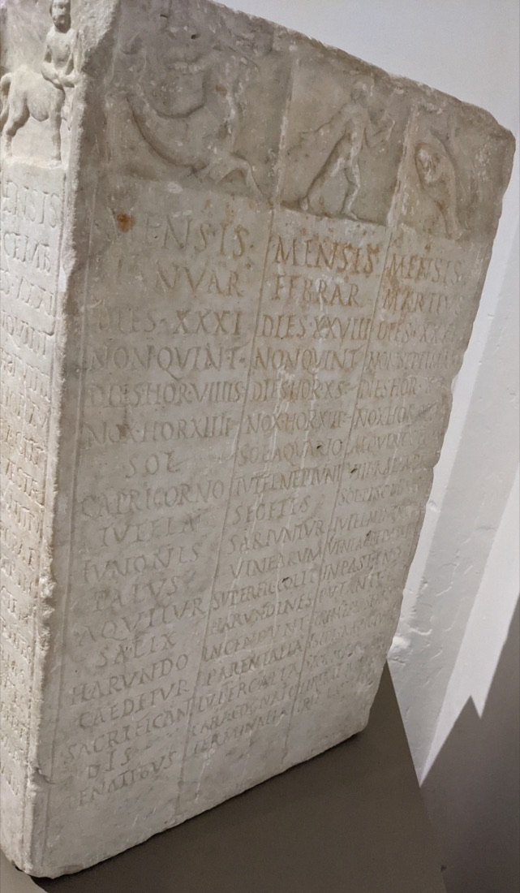
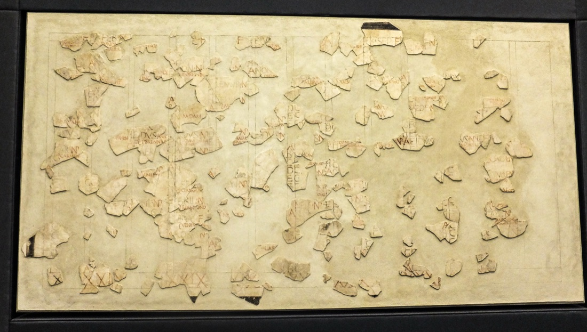
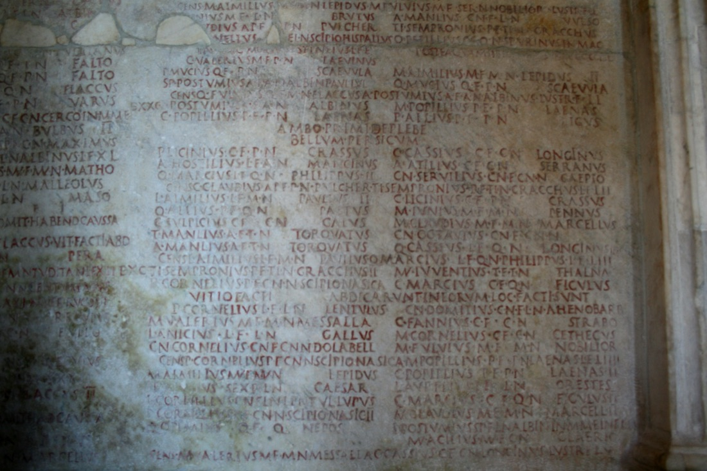
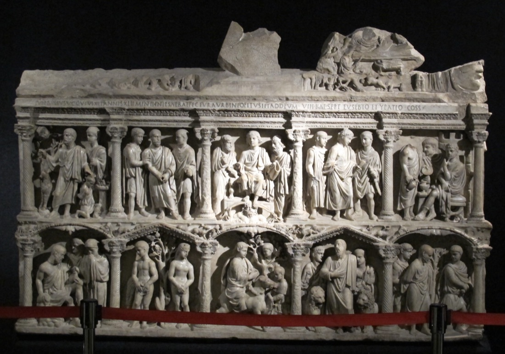

The Roman Kalendar
From Moon Phases to Consuls — how a 10-month scheme became the year we still live in.
…
Aegidius Stephanus Demaneo fecit
IRoman Kalendar vs. Modern Calendar
See a full Roman year and its modern equivalent, side by side. Switch the reference to make either the modern or the Roman year set the total day count — and watch the annus confusionis of 46 BC (445 days!) stretch the modern calendar across two years.
Month names and the civil year start change with the period. Before 44 BC the 7th month is Quintilis, not Iulius; before 8 BC the 8th is Sextilis, not Augustus. From 45 BC the lengths of the months are already those we use today (Macrobius); 8 BC changes only the name of the 8th month. Before 153 BC the consular year began on Kal. Mart. (1 March), marked with ⟨; from 153 BC it began on Kal. Ian. (1 January). The calendar type (Republican / Annus Confusionis / Julian) is shown in each panel header. Reconstruction choices: Notes tab.
Accepts: 15 March 44 BC, March 15 44 BC, Ides of March 44 BC, Kalends of January 45 BC, 2026, AD 79, AUC 709
IIThe Lunar Beginning
Tradition credited Romulus with a calendar of just 10 months and 304 days, beginning in March — with an uncounted winter gap. Four months had 31 days (March, May, Quintilis, October); the other six had 30 (not 29). His successor Numa Pompilius added January and February, cut one day from each 30-day month (odd numbers being lucky), and reached 12 months totalling 355 days. This is how the Romans told the story (Macrobius, Censorinus); it is tradition, not archaeology — see Notes.
This is why the month names look wrong: September is the "7th" month (septem), October the 8th, November the 9th, December the 10th — but only if you start counting from March. The civic year originally began in March (the month of Mars, when campaigning season opened). In 153 BC, consuls began entering office on 1 January instead, so they could reach their provinces before the summer campaign — making January the official civil year start. The dual calendar marks this shift: the civil year start day (⟨) moves from March 1 to January 1 at the 153 BC boundary.
The moon phase names survived inside the month itself: Kalends (new moon — the "calling", calare, of the new month), Nones (first-quarter moon) and Ides (full moon).
In the original lunar calendar, the pontiffs observed the sky. On a day close to the new crescent, a pontifical scribe (later the pontifex minor) and the rex sacrorum sacrificed at the Curia Calabra on the Capitol and called on Juno Covella — five times if the Nones would fall on the fifth, seven times if on the seventh (Varro, Macrobius). That calling (calare) gave the day its name: Kalendae. The same day the regina sacrorum offered a sow or ewe to Juno in the Regia. The Nones (nonae, "ninth") marked the first quarter, nine days before the Ides (counting inclusively): there the rex sacrorum announced the month's festivals. The Ides (possibly from Etruscan iduare, "to divide") fell on the full moon — the month's summit, sacred to Jupiter, when the Flamen Dialis sacrificed a white ram.
Rüpke reconstructs a fourth monthly beat as well: eight days after the Ides (a nundinum), the slot later occupied by the Tubilustrium in March and May, and by Feralia, Parilia, Neptunalia, Consualia, Divalia in other months. After the Nones, every day was counted backwards from the Ides; after the Ides, backwards from the next Kalends. The axis above is schematic. In a 29-day "hollow" month: Nones = day V, Ides = day XIII. In the four "full" 31-day months (March, May, July, October), Nones = day VII and Ides = day XV. Both patterns then have the same countdown from the Ides to the next Kalends (seventeen days inclusive — Macrobius).
Why the Kalends stopped following the moon
The new crescent is still a perfect observable. If the pontiffs had kept waiting for it, the Kalends would still have fallen on the new moon. They stopped waiting. The Kalends became a scheduled civil day, and a scheduled day cannot depend on last night's sky.
A state calendar has to be knowable in advance. Debts fell due on the Kalends; festivals, court days, and the consular year were written on the fasti. Once Gnaeus Flavius published the calendar (c. 304 BC), the year was a document, not a nightly watch. You cannot collect a loan on a day that might slip because of clouds.
Fixed month lengths are already not lunations. A true lunar month is ~29.53 days. Republican months were locked at 29 or 31. The next Kalends arrived because 29 or 31 days had elapsed — not because someone had seen the crescent.
355 days is already wrong for twelve moons. Twelve lunations are ~354.37 days. Numa's 355-day year runs about 15 hours past the moon each year. After a decade the civil Kalends is days away from the crescent, even with no other interference.
Intercalation was a solar patch that permanently unsynced the moon. The extra month was inserted after the Terminalia (23 Feb). In the reconstruction Rüpke shares with Michels, Intercalaris is written as 27 days, but its last five days are the same as February's last five (Regifugium and the countdown to 1 March). Net gain: 22 or 23 days — not a lunation. The next civil year therefore opens five or six days off the full moon, and nothing in the system can put it back. The names Kalends, Nones, Ides stay; the correspondence to the sky is gone. Political skipping or doubling of that month then made the solar error irregular as well.
The ritual outlived the observation. Pontiffs still "called" the Kalends and counted out the days to the Nones (Macrobius 1.15.9–10) long after the count was predetermined. The words stayed; the sky was no longer consulted. Rüpke's point: the moon is a democratic clock — anyone can see it. A solar year needs specialists and the power to enforce their decision. Publishing the fasti (Gnaeus Flavius, c. 304 BC, scribe of the pontiff Appius Claudius Caecus) was that enforcement.
So two clocks diverged. The moon in the sky remained a clean observable. The state's Kalends became a named day in a pre-written year. The architecture — three (or four) anchors, counting backwards — is the fossil of the observable. What was switched off was not the moon but the practice of waiting for it: civic time had to be fixed and published before the year began, so Rome locked every month at 29 or 31 days instead of tracking the real lunation (see Fixed month lengths are already not lunations, above) — a fixed approximation, not a prediction of the sky. Other cultures (Babylon, later Greek astronomers) show the moon could have been calculated in advance instead of watched; Rome's fix was cruder — it stopped consulting the sky rather than learning to predict it.
The drift — and how it was abused
Because the true lunar-solar correction is ≈ 11 days/year, the pontiffs' political discretion made the calendar a tool. Allies got long years, opponents short ones; seasons slid badly. By Julius Caesar's time the civil year was ≈ 3 months out from the seasons — the product of a cluster of skipped intercalations in the 50s–40s BC, not of 250 years without any correction.
A 355-day year is too short. Civil dates run ahead of the sun, so seasonal events fall on later civil dates: the true equinox moves from March toward April, May, June. (A slide into February would mean a year that was too long.) The bar below is a schematic of skipped intercalation, about 10 days per skipped year. Nine skipped years ≈ the 90-day error Caesar paid off in 46 BC.
Read this as a clock, not a map. One hand is fixed at true spring — the sun doesn't care what year it is. The other hand marks wherever the civil calendar's "March" actually falls that year. A 355-day civil year is short, so its hand creeps forward around the dial every year; after about 37 years (365¼ ÷ ~10¼ drift-days a year) it has swept a full circle and the two hands line back up. This is not a picture of the live moon still locking the Kalends — that lock was already off once months had fixed lengths (see above).
Year 0: both hands aligned. Civil "March" and true spring are the same point. This animation shows seasonal drift from a 355-day year with no intercalation — not a claim that the Kalends still tracked the live moon.
IIIThe Rhythm of Roman Time
The Roman Kalendar was not an abstract timekeeping device. It was the skeleton of Roman society — an organiser of civic and religious life that told you not what day it was, but what was coming. Understanding this rhythm is the key to understanding why Romans counted backwards, why the Kalends/Nones/Ides system survived long after the moon was forgotten, and why the calendar looked the way it did.
A buggy Kalendar — patched badly many times, eventually mostly fixed with the help of Eastern knowledge via Alexandria
It is tempting to judge the pre-Julian Roman calendar as a failure — a chaotic system where politicians manipulated intercalation, seasons drifted by months, and the year was sometimes 445 days long. But this misses the point. The Roman calendar should be understood as a technical solution to a real problem, built with the tools and knowledge available, and progressively patched over centuries — much like a long-running software project that accumulates bugs, workarounds, and legacy constraints.
The fundamental constraint at the beginning was this: early Romans had no institutional way to measure the solar year. They had no telescopes and no 365.2422-day figure. What they did have was the moon — the most visible, regular clock in the sky. Every ~29.5 days it cycles through new crescent, first quarter, full, last quarter, and back. That is an observable: you can look up and verify it. Rüpke's phrase is exact: the moon is a democratic clock; the sun is not — solar observation needs specialists, memory, and someone with the power to say "the year starts here." So the earliest Roman calendar was built on what could be observed, not what could be calculated.
Other civilisations had already built better solar or lunisolar years by the time Rome's calendar took shape. The Babylonians were tracking the solar year with eclipse records from at least the 8th century BC. Egypt had run a 365-day civil calendar since the 3rd millennium BC. China had lunisolar intercalation by the Zhou period. Greek astronomers (Meton, Callippus, Hipparchus) later produced year-lengths Rome could have borrowed long before Caesar. The Indian Vedāṅga Jyotiṣa describes a lunisolar cycle; its date is disputed (estimates range from the late 2nd millennium to about 400 BC). Maya solar counting is attested by the late 1st millennium BC but reaches its famous precision in the Classic period. The knowledge existed in the wider world — Rome did not adopt a solar year until Caesar. That is less ignorance than path-dependence: the Kalends/Nones/Ides structure was too deeply embedded in civic life to change, until a dictator with the power to replace it did so.
The Kalends began as the new crescent. The pontiffs watched the sky and "called out" (calare) the month when they saw it. That is a robust ground truth — for as long as you actually wait for the sighting. Once months had fixed lengths and the fasti were a published document, the Kalends no longer waited. The crescent in the sky was still a perfect observable; the state's Kalends was no longer attached to it. The Lunar Origin tab sets out why a civic calendar cannot keep using a nightly watch. What survived every reform was not the observation, but the interface: three named anchors a month, counting backwards between them.
The compounding bug was the gap between twelve lunar months (~354 days) and the solar year (~365.25). Numa's 355-day year was a reasonable lunar approximation, but it is ~10 days short of the sun each year. Mercedonius was a patch — a manual intercalary month inserted by the college of pontiffs (the Pontifex Maximus becoming decisive only later). The patch was human-controlled: it could be skipped, delayed, or doubled for political ends. Ancient and modern scholarship name the motives directly — Macrobius (Sat. 1.14.1) and the modern reconstruction of the practice (Lintott, CQ 18 (1968), 190–91) agree pontiffs lengthened or shortened the year to prolong a friendly magistracy, cut a hostile one short, or let a tax-farmer collect an extra month's interest before the books closed — the calendar as a lever on other people's terms of office and other people's debts. By 46 BC a cluster of skipped intercalations had put the civil year about three months out from the seasons — broken enough that Caesar did a full rewrite (the 445-day annus confusionis, then the Julian year).
Even Caesar's rewrite kept the Kalends. He replaced the engine — lunar observation, then a broken schematic year — with solar calculation, but kept the interface: months still start on the Kalends, days are still counted backwards from the next anchor. The moon was no longer consulted; the structure it had given was permanent. The interface was sound. It was the engine underneath — first the lunar lock, then the year length itself — that had been allowed to fail.
The Kalendar as Almanac — feed it, defend it, protect it
The word "calendar" itself comes from Kalendae — the Roman name for the first day of each month, when debts were due and pontiffs announced the new moon. But the Roman Kalendar was far more than what we think of as a calendar today. It was, in essence, a religious-agricultural-military almanac — a single instrument that synchronised Roman society with the three forces that kept it alive:
- Agriculture — feed it. The vast majority of Romans were farmers. The Kalendar told them when to sow, when to prune, when to harvest, when to drive flocks to summer pasture and bring them back. Festivals like the Robigalia (25 April — sacrifice to avert wheat rust), the Consualia (21 August — rest the plough-oxen), and the Vinalia (23 April — taste the new wine) were not abstract rituals: they were the operational schedule of Roman agriculture. A mistake in timing meant hunger.
- War — defend it. The campaigning season opened in March (Mars = war) and closed in October (Armilustrium — purify the weapons). The Kalendar told the state when to raise legiones, when consuls should depart for their provinces, when to expect the army back. The entire military cycle — levies, marches, battles, withdrawal, winter quarters — was timed by the calendar. As Rome's empire expanded, the 153 BC shift of the year-start from March to January was itself a military logistics decision: consuls needed extra months to reach Spain, Greece, or Asia before spring.
- Religion — protect it. The gods had to be honoured at the right time, or Rome would lose their favour. The Saturnalia, Lupercalia, Cerealia, Vestalia — each was a contract between the state and the divine, and the Kalendar was the schedule of those contracts. Missing a festival was not just a scheduling error; it was a religious failure that could bring plague, defeat, or famine. The dies fasti/nefasti system (which days courts could meet, which were sacred) was the Kalendar's way of preventing civic business from clashing with divine obligations.
- Debt — pay it. The word Kalendae itself was tied to debt: on the Kalends, payments fell due, loans were settled, interest was reckoned. The Romans even used ad kalendas Graecas ("on the Greek Kalends" — a day that doesn't exist) to mean "never." The Kalendar was the financial clock of the Roman economy, synchronising creditors and debtors across the city and beyond.
In a very real sense, the Roman Kalendar was both a practical almanac and a civic agenda — a single document that combined agricultural guidance, military scheduling, religious obligation, and financial deadlines. As an almanac, it told you what to do when: when to plant, when to march, when to sacrifice. As an agenda, it told you what was coming and how much time you had to prepare: how many days until the next festival, the next levy, the next payment due. The Roman Kalendar told farmers when to plant, generals when to march, priests when to sacrifice, and creditors when to collect — all in one system, all keyed to the same rhythm of Kalends, Nones, and Ides. When we reduce it to "a way of numbering days," we miss that it was the operating system of an entire civilisation.
Why backwards counting? — the rhythm of sacred and civic time
Why count down from the next feast, rather than up from the start? Because Roman time was eschatological — it ran towards the next sacred event. The Kalends, Nones, and Ides were not just markers; each was a day of specific sacrifices and rituals. The Kalends opened the month with offerings to Juno. On the Nones the rex sacrorum announced the month's remaining festivals (nonae = "ninth day before the Ides", counting inclusively). The Ides honoured Jupiter. (Nundinae, the eight-day market cycle, is a different word — not an etymology of Nones.)
Counting backwards from the next feast meant that every day carried its liturgical meaning — you always knew how many days until the next sacrifice, the next assembly, the next market. This is the same structure as the Christian calendar of saints' days or the Islamic countdown to Ramadan: the calendar tells you not just what day it is, but what is coming. For a Roman farmer, this meant knowing when to prepare for the Terminalia (23 Feb), the Robigalia (25 April, to avert wheat rust), or the Saturnalia (17 December). For a Roman citizen, it meant knowing when the comitia could meet (only on dies comitiales), when courts were open (dies fasti), or when no business was permitted (dies nefasti).
The Kalendar as organiser, not archive. This is perhaps the most fundamental difference between the Roman calendar and ours. Our modern calendar is primarily a historical instrument: we use it to locate events in the past ("July 14th, 1789") or to plan far into the future. The Roman calendar had a different purpose. It was above all an organiser of civic and religious life — a device for telling you how many days were left until the next festival, the next sacrifice, the next assembly, the next market day. The calendar's job was not to locate you in a historical timeline but to structure your present: when to pray, when to vote, when to trade, when to rest.
The Kalends themselves hark back to this original agricultural function. In the earliest lunar calendar, the pontiffs "called out" (calare) the new moon and counted the days to the Nones — the purpose was practical: when to sow, when to reap, when to prune, when to drive the flocks to summer pasture. Sowing too early or too late could mean a failed harvest. The moon was the most readily observable regular clock in the sky, long before any written calendar existed. So the Kalends–Nones–Ides structure began as an agricultural agenda keyed to the lunar cycle, and later — as Rome urbanised — accumulated religious, military, and financial layers on that farming core. By the time Caesar reformed it, the agenda was still there; the moon-lock was already gone. The Kalendar of 46 BC was, at its deepest root, a farmer's agenda that had become the operating system of an empire.
The nundinal cycle — the Roman "week"

Romans had no 7-day week until late antiquity. Instead, market days (nundinae) recurred every 8 days (the ninth day, counting inclusively — hence the name), marked with the letters A–H on painted calendars. In the oldest lunar month the eight-day beat reset from the Nones; the late-fourth-century reform (the same package as Flavius's published fasti) made the A–H cycle run across month and year boundaries — a continuous week, like ours, laid on top of Kalends/Nones/Ides rather than replacing them. Market day was then market day, every eight days, regardless. The nundinae were when farmers came to the city to sell, buy, and hear political news. Because a 355-day year is not a multiple of 8 (355 = 44×8 + 3), the letter that lands on 1 January shifts by three every ordinary year — one reason a separate late-Republican adjustment was needed to keep the nundinal cycle from colliding with the civil New Year. From the fourth century AD the seven-day week and Sunday (dies solis / dies dominicus) overlaid this older beat, and Easter closed the courts (Theodosian Code).
Assemblies were barred from market days by law, not mere custom — and the fix was more surgical than "no politics on market day." The pontiffs' systematic F/N letter scheme first threatened to classify nundinae as nefastus (by analogy with the Kalends and Ides, which also restricted assemblies) — but that would have shut out the legal business that rural visitors came in for as well. The lex Hortensia (287 BC, tribune Q. Hortensius) supplied the fix: nundinae were fixed as dies fasti — F, so courts could sit — but specifically excluded from the C (comitialis) days on which assemblies could meet. The same law closed a related loophole: it made resolutions of the plebeian assembly (plebiscita) binding on all citizens, patricians included, and in exchange required that assembly to meet only on regular C-days like everyone else — no more snap votes sprung on the crowd already gathered for market (Rüpke 2012, on Macrobius, Sat. 1.16).
Market day — restart at the Kalends, or run straight through?
This is the mechanism in miniature, at a single month join. Two strips of the same two months (April, then a 29-day gap to May): the top one resets the A–H count at every Kalends, as the oldest system did; the bottom one never resets, as the reform made it. Gold cells are nundinae (here letter A); the gold bar between the strips marks the Kalends of May. Press play and watch what happens where the strips meet at May 1 — that single moment is the whole reform in one picture. (Below this, the same idea is stepped across a full year instead of one join.)
April starts on A (market and Kalends together). In the old system every month does that. After the reform, only the first month in the sequence does — May 1 can fall on a quiet letter.
Zoom out: the same continuous cycle across a whole year
Same rule as the bottom strip above — A–H never resets — but now laid across an entire Republican year (Martius to Februarius, 355 days), so you can see how far the drift actually goes. Kalends/Nones/Ides borders still follow each month's own pattern (VII/XV in the four full months, V/XIII elsewhere); gold-filled cells are market days. Day 1 (Martius) is arbitrarily set to letter A — any letter could have been chosen; what matters is that nothing resets it afterwards. Step through the Kalends of each month, one at a time, and watch the market letter wander away from month-start.
Martius 1 = letter A. Press the button to step forward, one Kalends at a time, and see how the market day drifts against it.
IVThe Republican Calendar (355 days)
The pre-Julian Republican year had four "full" months of 31 days and the rest "hollow" months of 29 days — except February, with 28 in common years:
Total: 355 days — about 10 short of the solar year. The college of pontiffs therefore inserted an extra "leap month", the Mercedonius / Intercalaris, after the Terminalia (23 February), roughly every other year. Censorinus and Macrobius say it added 22 or 23 days. Michels and Rüpke: the month is written as 27 days, but its last five days are February's last five, so the net is those 22–23 — and the next year opens 5–6 days off the moon, with no way back. A law of the consul M'. Acilius (191 BC) tried to regulate intercalation; it did not stop the politics. The dual calendar does not insert this month in ordinary Republican years — only in 46 BC. See Notes.
The consequences of this 10-day gap — and the political abuse of intercalation — are shown in the Lunar Origin tab (equinox bar and orbit schematic). Those animations show seasonal drift from skipped intercalation, not a live moon still locking the Kalends.
Why February stays short — and why the leap day sits at Feb 24, not the end
February (Februa = purifications; Lupercalia) was the "clean-up" month of the dead, and — being the last month of the old March-started year — the leftover imbalance and the intercalation landed on it.
But the leap day was not appended at the end of February (day 29). It was inserted on 24 February — the day the Romans called ante diem VI Kalendas Martias, "the 6th day before the Kalends of March". Why there?
The answer lies in Roman religion and counting. The Terminalia (23 February) was the festival of Terminus, the boundary god — it marked the end of the religious year. The day after Terminalia, 24 February, was the Regifugium ("king's flight"), commemorating the expulsion of Tarquinius Superbus. These were the last sacred days of the old year, before the new cycle began on 1 March. Intercalation had to happen at this liminal point — after Terminalia closed the old year, but before March opened the new one.
Romans counted dates backwards and inclusively from the next fixed point. So 24 February = a.d. VI Kal. Mart. The inserted leap day was placed after the normal 24th — so the 24th was simply doubled: bis sextum, "the sixth day twice" (hence our word bissextile). In leap years, there were two consecutive days both labelled a.d. VI Kal. Mart. — the first was the "regular" 24th, the second was the intercalated day. This preserved the backward numbering: the days after the leap day kept their existing countdown to the next Kalends — the 25th remained a.d. V Kal. Mart. ("5th day to the Kalends, counted inclusively"), the 26th a.d. IV Kal. Mart., and so on. The leap day was inserted before the countdown resumed, not at its end. This reveals something fundamental about Roman time: the year did not start with a new month — it started with the countdown towards the next Kalends. Roman time was always forward-looking, oriented towards the next sacred anchor. That forward-looking expectation — how many days until the next Kalends — was what could not be disturbed. Inserting the leap day at the countdown's beginning (doubling the 6th) rather than at its end kept every subsequent number intact, so no one had to relearn when the next festival, sacrifice, or market day fell.
This is also why Caesar, when he created the Julian calendar in 45 BC, kept the same insertion point: the Julian leap day falls after a.d. VI Kal. Mart. (24 Feb), not on 29 February as in our modern numbering. The extra day was still conceptually a "doubled sixth" — bis sextum — even though February now had 29 days in leap years. Civil numbering as "29 February" is a later habit; the Gregorian reform of 1582 did not itself move the leap day. The Roman church long continued to treat the bissextile as a doubled 24th.
Five snapshots — how many days were in a month?
Month lengths were not fixed once and for all: they changed at five identifiable points in Roman history. Below, each month carries its name as Romans of that era actually called it, with the modern English month underneath for reference — watch how the day-counts move (and how rarely the names do).
Colour just tracks length here, not the Republican-specific plenus/cavus ("full"/"hollow") terminology, which strictly applies only to the pre-Julian year: ■ 31 days · ■ fewer than 31 (excl. February) · ■ February · ■ intercalary (inserted month).
VHow Romans Named a Day
Romans did not number days 1, 2, 3… from the start of the month. Instead, every day was named by counting backwards, inclusively, from the next fixed anchor point. There were three anchors, inherited from lunar observation:
- Kalends — the 1st (new moon). From kalare, "to call out" — the pontiff announced the new moon.
- Nones — the 5th, except in March, May, July and October, where it is the 7th (first-quarter moon). On the Nones the rex sacrorum announced the month's festivals. The days after Kalends, Nones, and Ides (dies atri / postriduani) were unlucky for new undertakings — a different rule from dies nefasti (N-days, when courts were closed).
- Ides — the 13th, except in those same four months, where it is the 15th (full moon). The Ides were sacred to Jupiter — the Flamen Dialis sacrificed a white ram. The day after Kalends, Nones, or Ides was a dies ater (black/unlucky). The most famous named black day is the dies Alliensis, 18 July (defeat at the Allia, 390 BC): no public ceremonies.
Why March, May, July, and October are different — the legacy of Romulus's "full" months

You will have noticed the exception: in March, May, July, and October, the Nones fall on the VII (7th) and the Ides on the XV (15th) — two days later than in all other months (Nones = V, Ides = XIII). Why?
These four months were the original "full" (pleni) 31-day months in Romulus's 10-month calendar. The remaining six were "hollow" (cavi) — 30 days under Romulus, then 29 after Numa cut a day from each (odd numbers being lucky). The extra two days in the full months sit before the Ides: they push the first-quarter marker (Nones) from day V to day VII, and the full-moon marker (Ides) from day XIII to day XV, so the phase names still land at roughly the right point in a longer month.
When Numa added January and February, he gave them the short-month pattern (Nones = V, Ides = XIII). What then froze is not "31 days ⇒ Nones on the 7th", but the four named months: March, May, Quintilis/July, October. Caesar later made January, Sextilis, and December 31 days without moving their Nones — he inserted the extra days after each month's festivals (Macrobius 1.14.8), so those three 31-day months still have Nones on the 5th. Long after the lunar connection was forgotten, Romans still counted ante diem III Idus Martias differently from ante diem III Idus Aprilis. The moon was gone; its fingerprint remained on four months, not on every long month.
In the full month, the Nones are pushed 2 days later (V→VII) and the Ides 2 days later (XIII→XV). The extra days sit before the Ides. After the Ides, both Republican patterns have the same countdown to the next Kalends: the day after the Ides is a.d. XVII Kal. in both, and the last day of the month is pridie Kalendas of the next month (Macrobius: seventeen days from Ides to the following Kalends in both types). The axis ends on that last day, not on the next Kalends. After Caesar, January, Sextilis, and December are 31 days with Nones still on the 5th, because he added their extra days after the Ides.
The day itself is ante diem ("towards the day of") plus a countdown: ante diem III Kalendas Martias = "the 3rd day before the Kalends of March" = February 27. The day immediately before a fixed point is pridie ("the eve"). Crucially, Romans counted inclusively — the anchor day itself counts as day 1, so "III Kalends" means two days before the Kalends, not three.
Count to the Kalends — inclusive vs exclusive
March 1 is the anchor. A Roman counts it as day I, then steps backward. We tend to count the gap and land one day too early.
Press “Count as a Roman”: I = Kalends of March, II = pridie (28 Feb), III = 27 Feb.
For a deeper discussion of why Romans counted backwards — the eschatological structure of Roman time, the calendar as organiser of civic life, and the agricultural origins of the Kalends — see the Rhythm of Time tab.
VIMonth Names
The names are a layered fossil: gods and a purification festival, then position-numbers counted from March, then two political honours. That is why our year still says "October" for the tenth month while placing it eighth.
After Caesar's death, Quintilis (the "5th" month) was renamed Iulius (July) in 44 BC in his honour. Sextilis was renamed Augustus (August) in 8 BC. Caesar had already given Sextilis 31 days; Augustus did not steal a day from September. The dual calendar reflects the names: before 44 BC, month 7 is Quintilis; from 44 BC, Iulius. Before 8 BC, month 8 is Sextilis; from 8 BC, Augustus — both 31 days from 45 BC on.
Other imperial renamings were attempted but did not stick: Tiberius rejected a proposal to rename September and October after his mother and father ("what will you do if there are thirteen Caesars?"); Caligula briefly tried Germanicus; Domitian tried Domitianus; and Commodus renamed all twelve months after his own titles — all reversed after his assassination.
This is why our months are an oddly mixed set: four named after gods (January, March, May, June), one after a purification festival (February), two after emperors (July, August), four still bearing their old position numbers from the March-start year (September–December), and April — etymology disputed (aperire "to open", or Aphrodite), not a festival name.
Where do all the month names come from?
The names preserve the layered history of the calendar — from gods and agriculture to numbers and political renamings:
| Month | Origin | Etymology & notes |
|---|---|---|
| Ianuarius | God | Janus, the two-faced god of doors, gates, and beginnings. He looks forward and back. |
| Februarius | Religion | Februa, the festival of purification. From februum, a purificatory instrument. |
| Martius | God | Mars, god of war. Originally the first month — campaigning season opened in spring. |
| Aprilis | Agriculture? | From aperire "to open" (buds opening) — the traditional derivation, though some ancient scholars derive it from Aphrodite (Greek influence). The etymology is debated. |
| Maius | Goddess | Maia, goddess of growth; or maiores "elders" — honouring ancestors. |
| Iunius | Goddess | Juno, queen of gods; or iuniores "young people" — month of young growth. |
| Quintilis → Iulius | Number → politics | "Fifth" (quintus). Renamed Iulius in 44 BC for Julius Caesar, born this month. |
| Sextilis → Augustus | Number → politics | "Sixth" (sextus). Renamed Augustus in 8 BC. Already 31 days from Caesar's reform; the "stolen day" story is medieval. |
| September | Number | "Seventh" (septem). Never renamed — Tiberius refused: "what if thirteen Caesars each want a month?" |
| October | Number | "Eighth" (octo). Month of Armilustrium (19 Oct) — weapons purified as campaigns closed. |
| November | Number | "Ninth" (novem). |
| December | Number | "Tenth" (decem). Home of Saturnalia, the great winter festival of reversal. |
VIIThe Religious Dimension of the Fasti

More than forty inscribed copies of the fasti survive, almost all from the early Principate. Only one pre-Julian copy is known: the Fasti Antiates Maiores (c. 60s BC), painted in red and black, still showing QVI/SEX rather than July/August, plus an INTER column for intercalation. The name fasti is from the days on which the praetor may speak the words do, dico, addico ("I give, I say, I adjudge"). Every day carries a letter — a fully religious classification:
| Letter | Meaning | Business? |
|---|---|---|
| F | dies fastus — law-court business allowed | Yes, law courts open |
| N | dies nefastus — no public business; festivals | No |
| C | dies comitialis — assemblies may be held | Yes (assemblies) |
| NP | nefastus publicum — major public holidays | No |
| EN | endotercisus / intercisus — "cut" day, partly usable | Partly |
| QRCF | quando rex comitiavit fas — fas when the rex sacrorum has comitiated | After a ritual moment |
Gnaeus Flavius, pontifical scribe and aedile in 304 BC, is credited with first publishing the calendar — taking the list of court days out of the pontiffs' exclusive keeping. A century later Marcus Fulvius Nobilior, after his triumph, placed a painted calendar in the temple of Hercules of the Muses (c. 189 BC), with temple-dedication notes that Ennius helped compose. Rüpke's thesis: later marble fasti are descendants of that Fulvian wall — the calendar as a public history of Rome, not only a list of court days. Under Augustus such marble copies multiply (imperial birthdays and victories added); they then fade. Ovid's Fasti is the poetic walk through the same year: Lupercalia (Feb 15), Matralia, Saturnalia, and much more.
A Roman-style February — day-letter column
Hover any letter for its meaning. This is one month (February) of a rendered "painted calendar":
February is a short month: Nones on the 5th, Ides on the 13th, then countdown to the Kalends of March. Letters follow Scullard's reading of the fasti. February is the "purge" month of the dead — hence 28 days and the leap-day position (23/24 Feb, bis sextum).
The festival year — how the calendar unfolded
The Roman year was not a flat sequence of days. It was a landscape of peaks and valleys — sacred days, festivals, games, and market days that gave rhythm to public and private life. Here are the most important festivals, month by month, showing how the calendar wove together agriculture, war, religion, and politics:
Agonalia (9 Jan): sacrifice of a ram to Janus at the Regia. Carmentalia (11 and 15 Jan): two feast days of Carmenta, goddess of childbirth and prophecy, observed especially by women. Compitalia is a movable feast (feriae conceptivae) for the Lares of the crossroads, usually in early January after Saturnalia — not a fixed date.
Parentalia (13–21 Feb): nine days honouring dead ancestors — families brought offerings to tombs; temples closed; marriages forbidden. Lupercalia (15 Feb): the most ancient and raucous festival — the Luperci ran naked through Rome whipping women with goat-skin thongs to ensure fertility. Terminalia (23 Feb): festival of Terminus, god of boundaries — it marked the end of the religious year. Regifugium (24 Feb): commemorated the expulsion of the kings.
Matronalia (1 March): the "women's Kalends" — husbands gave gifts to wives. Quinquatrus (19 March): named because it is the fifth day after the Ides, counting inclusively — not originally a five-day festival. It later expanded to 19–23 March as a festival of Mars and Minerva; the salii danced, and it marked the opening of the campaigning season.
Cerealia (12–19 April): festival of Ceres, goddess of grain. Parilia (21 April): the birthday of Rome — shepherds purified flocks by driving them between fires; the founding date (753 BC) was celebrated. Robigalia (25 April): sacrifice to Robigus, god of wheat rust — a dog and sheep were sacrificed to protect young crops. Vinalia (23 April): the first wine of the previous vintage was tasted.
Lemuria (9, 11, 13 May): three days to placate restless ghosts (lemures) — the paterfamilias rose at midnight, washed his hands, and spat out black beans, saying "I send these; with these I redeem myself and mine." Rome's festival of the dead in the first half of the year, complementing the Parentalia in February.
Vestalia (7–15 June): festival of Vesta, goddess of the hearth — the inner sanctum of her temple was opened to matrons; bakers and millers honoured the flame that baked Rome's bread. Donkeys were garlanded and rested from milling.
Neptunalia (23 July): festival of Neptune — huts of foliage were built for shade during the hottest, driest part of summer; Romans feasted outdoors, propitiating water sources as the heat peaked.
Consualia (21 Aug): festival of Consus, god of stored grain — horses and asses were garlanded and rested from ploughing. Linked to the Rape of the Sabine Women, blending harvest with foundation myth. Volcanalia (23 Aug): festival of Vulcan — praying the god of fire would spare the city's granaries during the dry season. His temple stood outside the walls, keeping fire at a safe distance.
Ludi Romani (4–19 Sep): the oldest and grandest Roman games — dedicated to Jupiter Optimus Maximus. Chariot races, theatre, and gladiatorial combats filled nearly two weeks; originally vowed during the early Republic's wars.
Augustalia (12 Oct): Imperial — games instituted in 19 BC after Augustus's return from the East, not a Republican festival. Armilustrium (19 Oct): the ritual "cleansing of weapons" — the salii danced again, and the sacred shields were purified. This marked the end of the campaigning season: soldiers stored arms for winter; no battles until Quinquatrus reopened the season in March.
Epulum Iovis (13 Nov): a solemn feast for Jupiter — senators and magistrates dined on the Capitoline, with the god's statue present as a guest. A festival of civic piety during the quiet season between harvest and Saturnalia.
Saturnalia (17 Dec, later 17–23): originally one day, 17 December. It grew to three days under Augustus, then five, and in popular use a week (17–23) in the later Empire — a festival of role reversal and revelry. Slaves wore the freedman's cap and were served by masters; gambling was permitted in public; courts and schools closed; gifts (sigillaria) were exchanged. It honoured Saturn, god of the Golden Age. Rooted in the agricultural calendar, it fed into the later Christmas season.
VIIICaesar's Reform (46–44 BC)
By 46 BC the calendar was about 3 months out from the seasons. Caesar, advised by the Alexandrian astronomer Sosigenes, discarded the lunar scheme entirely:
Sosigenes and the Alexandrian tradition. Caesar did not invent the solar calendar from scratch — he borrowed it from the world's leading astronomical centre. Alexandria, in Ptolemaic Egypt, had been the intellectual heir of Babylonian astronomy for centuries. The Babylonians had been tracking the solar year with remarkable precision since at least the 8th century BC; their data was transmitted to Greece and then to Alexandria, where the great Library and the Museum (a research institute) produced astronomers like Hipparchus (who calculated the tropical year as 365.2467 days — within 6 minutes of the modern value) and, a century after Caesar, Ptolemy. Sosigenes worked in this tradition: he knew the solar year was approximately 365¼ days, and he advised Caesar to adopt a simple, robust rule — 365 days normally, with an extra day every fourth year. This was not new science; it was established Alexandrian knowledge applied to Roman administration. Caesar's genius was not astronomical but political: he had the power to impose the reform and the 445-day correction that preceded it.
- 46 BC — the "last year of confusion" (annus confusionis): 445 days, with extra intercalary months inserted to realign the civil year with the solar year.
- From 1 January 45 BC: a purely solar year of 365 days + 1 leap day every 4 years (Julian year = 365.25 days). The lunar leap month was abolished; the "missing" 10 days were permanently distributed so months got 30/31 days (Feb 28/29).
- Leap day: placed after Feb 24 — doubling the VI Kal. Mart. (bis sextum).
What did those extra ~90 days do to rents, debts, and pay — all conventionally reckoned to the Kalends? Ancient sources describe the mechanics of 46 BC but not its financial fallout; see Notes §4 for what is, and is not, actually attested.
| Month | Republican | Caesar (45 BC) | From 8 BC (name only) |
|---|---|---|---|
| Ianuarius | 29 | 31 | 31 |
| Februarius | 28 | 28 / 29 leap | 28 / 29 leap |
| Martius | 31 | 31 | 31 |
| Aprilis | 29 | 30 | 30 |
| Maius | 31 | 31 | 31 |
| Iunius | 29 | 30 | 30 |
| Quintilis → Iulius | 31 | 31 | 31 |
| Sextilis → Augustus | 29 | 31 | 31 |
| September | 29 | 30 | 30 |
| October | 31 | 31 | 31 |
| November | 29 | 30 | 30 |
| December | 29 | 31 | 31 |
| Total | 355 | 365/366 | 365/366 |
Macrobius and Censorinus: Caesar added 10 days as +2 to January, Sextilis, and December, and +1 to April, June, September, and November — already the lengths we use today, including Sextilis 31 and September 30. He inserted those days after each month's festivals, so January/Sextilis/December have 31 days but keep Nones on the 5th. The story that Augustus stole a day from September (or February) to make his month as long as July is a medieval invention (Sacrobosco, 13th century), contradicted by those ancient sources and by a 24 BC papyrus that already has a 31-day Sextilis. In 8 BC Sextilis was renamed Augustus; the lengths did not change.
The leap-year blunder — 36 years of too many leap days
Caesar's rule was simple: add one extra day every fourth year. But the pontiffs who administered the calendar after Caesar's assassination (44 BC) misread the instruction. They applied the rule as "every third year" — because Romans counted inclusively: if year 1 is a leap year, then the "fourth year" counting inclusively is year 3 (1, 2, 3, 4 — but "1 to 4" = 3 intervals). The result was a leap year every 3 years instead of every 4 — too many leap days, causing the calendar to drift behind the sun (the opposite of the earlier drift).
From 45 BC to approximately 9 BC, this error accumulated: roughly 12 leap days were inserted when only 9 should have been — 3 extra days. Augustus recognised the problem (the exact year-by-year sequence is debated; Scaliger's reconstruction is the usual one — see Notes) and corrected it in two stages:
- ~9 BC onward: skip leap years until the three extra days were burned off (commonly reconstructed as omitting 5 BC, 1 BC, and AD 4).
- From AD 8: resume the correct 4-year cycle. AD 8 is a leap year — the resumption, not a skipped year. After that, the Julian calendar ran as intended until the Gregorian reform of 1582 addressed the remaining ~11-minute-per-year error (365.25 vs 365.2422).
The irony is rich: Caesar fixed the under-counting of the Republican calendar (355 vs 365), only for his successors to introduce an over-counting bug (leap every 3 instead of 4 years). The entire episode — from 45 BC to AD 8, some 53 years — was needed to get the Julian calendar actually running correctly. A striking reminder that even a "scientific" calendar needs disciplined administration: the science was right (Sosigenes knew 365¼), but the implementation was wrong, and it took two generations to debug.
Why move the year start to January? Politics.
Since 153 BC, consuls entered office on 1 January. A January start let newly elected consuls leave Rome and reach their provinces in time to campaign in the summer — March (Mars) was the month of war when the campaign season opened. The reform also stabilised military logistics: predictable dates for levies, provincial proconsul command handovers. Exactly the kind of chaos Caesar himself exploited before crossing the Rubicon.
IXDating by Consuls

Romans did not number years sequentially. Instead, each year was identified by its eponymous consuls: "the year of Marcus Tullius [Cicero] and Gaius Antonius" = 63 BC. Ordinary consular pairs from the early Republic to AD 541 run to about a thousand; suffect consuls under the Empire add many more names, recorded in lists called fasti consulares, inscribed on marble and displayed in the Forum.
Consuls and imperium — the military heart of the Republic
In the Republic, the two consuls were not merely civil magistrates. They held imperium — supreme military and executive command, conferred by the lex curiata and ratified by the auspicia (divine approval). This imperium was geographically limited: inside the pomerium (Rome's sacred boundary), consuls could not command armies or exercise military authority — their imperium was domi ("at home", civilian). Outside the pomerium, it became militiae ("in the field", military). Crossing the pomerium to leave Rome was, symbolically, the act that transformed a consul from magistrate into general.
This is why the year began in March. The consuls entered office, performed the auspicia, received their provinces by senatus consultum, and then left Rome to take command. March — the month of Mars — was when passes cleared, roads dried, and the campaign season opened. The calendar year and the military cycle were the same thing.
As Rome expanded beyond Italy (after the Punic Wars), this created a logistical problem. Consuls needed to reach distant provinces — Spain, Greece, Asia Minor, Africa — before the campaign season. A March start left too little time. So in 153 BC, the Senate moved the consular year-start to 1 January. This gave consuls two extra months to travel to their provinces before spring. The shift from March to January was, at its core, a military logistics decision driven by imperial expansion.
From two consuls to many — the breakdown of consular dating
In the early and middle Republic, two consuls served for the entire year, and dating by their pair was simple: "Cicerone et Antonio consulibus" unambiguously identified 63 BC. But as Rome's empire grew, this system came under strain:
- Extraordinary commands — by the late Republic, generals like Marius, Sulla, Pompey, and Caesar held multi-year commands that bypassed the annual consulship. The consulship became a political stepping-stone rather than the apex of military power.
- Suffect consuls — under the Empire, if a consul died or resigned mid-year, a consul suffectus (replacement) was appointed. By the 1st century AD, it became common for consuls to serve only part of the year, with suffect consuls taking over. Some years had 4, 6, or even up to 10–12 consuls in succession.
- Ordinary vs. suffect — the two consuls who entered on 1 January were the consules ordinarii, whose names gave the year its official designation. Suffect consuls who replaced them during the year were recorded in the fasti, but the year was still named after the ordinarii. Under Hadrian and later, suffect consulships proliferated as honorary appointments, diluting the office's prestige.
The multiplication was political patronage, not administrative accident. After the civil war of AD 69 (the "Year of the Four Emperors" — Galba, Otho, Vitellius, Vespasian), Vespasian needed to reward the men whose support had put him on the throne and to draw potential rivals into the new regime rather than leave them outside it with a grievance. Multiplying suffect pairs let him do both at once: more pairs meant more supporters — and more dangerous men — could each be given a taste of the consulship every year, while Vespasian and his son Titus kept renewing the prestigious ordinarius consulship for themselves to advertise dynastic continuity. Nerva, thrust into power in AD 96 with no dynasty and no army loyal to him personally after Domitian's assassination, leaned on the same tool for the same reason: even a few months as consul suffectus was currency for buying loyalty during an uncertain succession.
This complicated dating enormously. A document might say "III Kal. Apr., Sabino et Praesentio consulibus" — but which 24 March? If the suffect pair changed mid-year, different parts of the same year had different consular names. Scholars must cross-reference the fasti consulares to resolve these ambiguities. By late antiquity, consular dating was gradually replaced by regnal years of emperors and, ultimately, by the indiction cycle (a 15-year tax cycle instituted by Diocletian).
From consular years to era systems
For long-span mathematics and chronology, consular dating was insufficient. Several era systems were used:
- Olympiads — from 776 BC, each Olympiad being 4 years. Used by Greek historians (Polybius, Diodorus).
- Ab Urbe Condita (AUC) — "from the founding of the City", counted from 753 BC. Used by Roman historians (Livy, Tacitus), though rarely in everyday documents.
- Diocletian era — from AD 284 (Diocletian's accession). This was the base from which the Christian reckoning (AD/BC) was calculated by Dionysius Exiguus in AD 525, who deliberately wanted to avoid dating from a persecutor of Christians.
- Indictions — a 15-year cycle used for tax assessment, standard in late antiquity and throughout the Middle Ages.
The last ordinary consuls were appointed in AD 541 (Basilius, under Justinian). After that, years were designated "post consulatum Basilii" or by indiction number — the end of a system that had named Roman years for over a millennium.
AUC calculator
AUC = AD year + 753; for BC years: AUC = 753 − BC + 1 (no year 0). Example: 45 BC (Caesar's first Julian year) = AUC 709.
XExamples — Ancient Dates in Their Own Words
Everything above is the machinery. Here it is in use — real ancient writers and real carved stone, dating real events by consuls and the Kalends, across half a millennium.
In letters and books
Cicero, Epistulae ad Atticum (68–43 BC), is dated throughout by the Roman formula — a.d. XVI Kal. Sextiles ("the 16th day before the Kalends of Sextilis"), hundreds of times across sixteen books of letters. His most urgent letter of all, headed a.d. XIII Kal. Apr. (20 March 44 BC) — five days after Caesar's murder, in Caesar's own fifth consulship, colleague M. Antonius — opens:
Augustus's own inscribed autobiography, the Res Gestae Divi Augusti — best preserved on a temple wall at Ancyra, modern Ankara — opens:
Augustus also popularised a new dating convention that outlived the consulship itself: citing his tribunicia potestas ("tribunician power") year-count on coins and inscriptions — every later emperor kept doing it.
Pliny the Younger — not the Elder, who died in the eruption he describes — dates the destruction of Pompeii in a letter to the historian Tacitus:
Modern archaeology — autumn fruit and braziers found at Pompeii — has led some scholars to suspect the true date was weeks later and the transmitted figure a copying error; a good reminder that even a named, dated eyewitness letter isn't automatically the last word.
On stone — inscriptions and monuments
Consular dating wasn't only literary. It was carved — on public monuments and, most movingly, on tombs.
The Fasti Capitolini (photograph, Consuls tab) is itself a dating instrument: a marble consular list compiled under Augustus. It records, among a thousand others, Caesar's own third consulship in 46 BC — colleague M. Aemilius Lepidus, the very year of the 445-day annus confusionis (see Caesar's Reform tab) — as "C. Iulio Caesare III et M. Aemilio Lepido," exactly the formula any contemporary document from that year would have used.

Junius Bassus was a Roman prefect who died newly baptised, and his is one of the best-preserved examples of a habit common across Christian burials in Rome from the 3rd–5th centuries AD: dating the deceased's burial by that year's consuls, precisely because ordinary Romans had no other year-numbering system available to them. The habit is older than Christian Rome — a pagan columbarium plaque for a young woman named Cosconia Callityche, from 10 BC, already records that she "was buried on the Ides [of July], when Iullus Antonius and [Fabius Maximus] Africanus were consuls." It outlasted the ordinary consulship too: the last ordinary pair was appointed in AD 541 (see Notes), after which dating shifted to regnal years and the indiction cycle.
XITry It Yourself
Gregorian → Roman date
The date picker is Gregorian and AD-only. For BC dates — the Ides of March 44 BC, 46 BC, AUC — use the Dual Kalendar tab (free-text box or Key Events).
Test your knowledge — 12 questions on the Roman Kalendar
XIINotes — what is solid, what is reconstructed
The Roman calendar is well documented in outline and uncertain in several mechanisms. This page follows standard reconstructions and flags the joins. Nothing below is hidden from the main tabs; this is the apparatus.
1. Why the Kalends left the moon
The new crescent is still a simple observable. The Kalends stopped tracking it because the state stopped waiting for it. A published fasti, fixed month lengths (29 or 31, not 29.53), a 355-day year (~15 hours longer than twelve lunations), and an intercalary month that adds 22–23 days by eating February's last five all detach the civil Kalends from the sky — the last of these, on Rüpke's reading, makes the offset irreversible. Macrobius still describes the ritual of "calling" the Nones on the Kalends after the count was predetermined. The architecture is a fossil of observation; the observation itself was switched off so civic time could be known in advance. Full argument: Lunar Origin tab.
2. Romulus's 10-month year
Macrobius and Censorinus give 10 months, 304 days, starting in March: four 31-day months and six 30-day months (not 29). Numa is said to have added January and February, cut one day from each 30-day month, and reached 355 because odd numbers were lucky. This is how Romans told the story. There is no independent archaeological calendar of Romulus. Rüpke (1995) argued against a historical ten-month year (Kein Zehnmonatsjahr). We still present the tradition because it explains the month names; we do not treat it as a dated reform.
3. Republican intercalation
The 355-day common year is solid (Censorinus, Macrobius, Fasti Antiates Maiores). The intercalary month is not. Macrobius: 22 or 23 days after the Terminalia. Michels (1967) and Rüpke: February truncated, then a 27-day Intercalaris whose last five days repeat February's last five — net +22/23, and the next year permanently off the moon. The lex Acilia of 191 BC tried to regulate intercalation. The dual calendar does not insert Mercedonius in ordinary Republican years — every year before 45 BC except 46 BC is shown as a flat 355 days. That is a teaching simplification, not a claim that Romans never intercalated.
Rüpke now dates the switch from observational lunar months to the fixed 355-day scheme to the end of the fourth century BC (publication by Gnaeus Flavius, 304 BC; context: Appius Claudius Caecus), not to the second decemvirate of the fifth century — retracting his 1995 reconstruction. The same package, on his reading, made the nundinal A–H cycle run continuously across months. A solar year that neighbouring lunar cities could not translate was also a political signal: Latin allies marched to Rome's drum.
4. The year of confusion (46 BC)
Suetonius: 445 days, 15 months, including the ordinary intercalary month plus two extra months between November and December. The total 445 is robust. The split used here is the usual one: 355 + 23 + 33 + 34. Other splits exist (Michels-style 27-day intercalary with February truncated, then 63 extra days). We keep February at 28 and add 23+33+34 so the year sums to 445 without silently deleting the end of February.
What happened to rents, debts, and pay across those extra ~90 days? No ancient source says, and we have not found modern scholarship that resolves it either — Suetonius (Div. Iul. 40), Plutarch (Caesar 59.2–3) and Macrobius (Sat. 1.14.2) confirm the mechanics of the stretch but are silent on its financial fallout. That looks like a genuine gap, not a settled-but-uncited answer, so we do not invent an ancient reaction to fill it.
What can be said, without inventing anything, is what the system's own rules imply — reasoning from mechanics that are well attested in general, even though no source applies them to 46 BC specifically:
- Magistracies almost certainly just ran long, automatically. Since 153 BC, consuls took office on a fixed calendar date (1 January) and left it on the next — a term was "Kalends to Kalends," not a count of days. Nothing in that rule needs a day-count to work: the consuls of 46 BC (Caesar III and M. Aemilius Lepidus) held office for however many days fell between those two Kalends, which that year happened to be 445. Their successors entered office on 1 January 45 BC exactly as usual. No special dispensation was required because the system was never counting days to begin with — the year was just unusually long that once. The same logic covers most provincial commands, which were typically granted in civil years, not in fixed day-counts.
- Interest reckoned by the month would mechanically run higher. A common Roman convention priced loan interest per calendar month (the benchmark maximum being centesima usura, "the hundredth" — 1% a month, 12% a year — the rate Brutus's agents were notoriously accused of circumventing at Salamis in the 50s BC via Cicero's letters). If a given loan was reckoned this way, a 15-month year simply generates fifteen months of interest instead of twelve — three months extra — as a plain consequence of the counting convention, not a decision anyone had to make. This is the same lever Lintott and Macrobius describe above, just at unusual scale.
- Annual leases likely cost the same, for more time. Roman leases in annum ("for a year") were conventionally priced as a fixed annual sum tied to the civil year, not a per-day rate. On that convention, a tenant under such a lease straddling 46 BC occupied the property for all 445 days for the same contracted sum — from a modern day-counting view, three months "free"; from the Roman contractual view, nothing was owed or forgiven, because the contract was never for a fixed number of days.
All three points follow from how the Roman calendar and Roman contracts are known in general to have worked, applied to this one unusual year — they are our reasoning, not a claim that any ancient author drew this conclusion.
5. Caesar's month lengths — not Sacrobosco
Macrobius 1.14.7–9 and Censorinus: Caesar added +2 to January, Sextilis, December and +1 to April, June, September, November. That is already August 31 / September 30. He put the extra days after each month's festivals, so January, Sextilis, and December have 31 days but Nones still on the 5th. The tale that Augustus stole a day from September (or February) is medieval (Johannes de Sacrobosco, 13th century). It is contradicted by those ancient authors, by Varro writing in 37 BC, and by a papyrus of 24 BC with a 31-day Sextilis. This page follows Macrobius, not Sacrobosco. Sextilis → Augustus in 8 BC is a rename only.
6. Leap years, 45 BC – AD 8
That the pontiffs leaped every third year by inclusive counting is well attested (Macrobius, Solinus). Which years actually leaped is reconstructed, not listed in a surviving fasti. Scaliger's scheme is the usual one: too many leaps until ~9 BC, then a pause (often 5 BC, 1 BC, AD 4 omitted), then the four-year cycle from AD 8. Alternatives exist (Bennett, Radke, and others). The dual calendar does not replay this bug: it uses proleptic Julian leaping (every fourth year in astronomical numbering) throughout. The Reform tab tells the story; the widget does not simulate it.
7. Equinox and orbit animations
A 355-day year is short, so seasonal events fall on later civil dates (equinox March → April → May → June). A slide into February would be the signature of a year that was too long. The ~90-day error of 46 BC came from a cluster of skipped intercalations in the late Republic, not from 250 years with zero correction. Both animations are schematics of skipped intercalation, not year-by-year reconstructions of 300–46 BC, and they illustrate seasonal drift — not a live moon still locking the Kalends.
8. "Modern" column in the dual calendar
For BC dates this is a teaching parallel: our month names, day-of-month numbers, Julian leaping before 1582 and Gregorian after. It is not a calendar a Roman would have used, and it does not skip ten days in October 1582. Roman names in that widget use the Julian/Republican month of the selected year, including Quintilis/Sextilis and the 445-day year of 46 BC when Roman reference is on.
9. AUC, festivals, and other dates
AUC uses Varro's 753 BC epoch (the literary standard). Other epochs existed (Cato 751, etc.). Founding of Rome is 21 April 753 BC (Parilia), Varro's date. Festival lengths grew: Saturnalia was originally 17 December; Quinquatrus is named as the fifth day after the Ides (19 March), later a five-day festival; Ludi Romani expanded over the Republic. Augustalia (12 Oct) is Imperial (19 BC). Compitalia is movable. The Fasti February table follows Scullard's letters; some stones are fragmentary. Dies Alliensis (18 July) is the most famous named black day (Grafton & Swerdlow). From AD 380–389, Theodosian legislation closes courts for Easter and Sunday — the seven-day week overlaying the nundinae.
Sources
Ancient: Censorinus, De die natali 20; Macrobius, Saturnalia 1.12–16; Varro, De lingua Latina 6; Ovid, Fasti; Suetonius, Divus Julius 40, Augustus 31, 87; Dio Cassius; Fasti Antiates Maiores (Degrassi); Fasti Praenestini.
Modern: Agnes Kirsopp Michels, The Calendar of the Roman Republic (1967); E. J. Bickerman, Chronology of the Ancient World (2nd ed. 1980); Jörg Rüpke, Kalender und Öffentlichkeit (1995) and The Roman Calendar from Numa to Constantine (2011); Rüpke, "Rationalizing Religious Practices: The Pontifical Calendar and the Law," in Tellegen-Couperus (ed.), Law and Religion in the Roman Republic (2012); Denis Feeney, Caesar's Calendar (2007); H. H. Scullard, Festivals and Ceremonies of the Roman Republic (1981); A. T. Grafton & N. M. Swerdlow, "Calendar Dates and Ominous Days in Ancient Historiography," JWCI 51 (1988); Bonnie Blackburn & Leofranc Holford-Strevens, The Oxford Companion to the Year (1999); G. Hacquard, Guide Romain Antique, Hachette (1952).
Contributions, corrections, and how this page was made
Found an error, or think a point needs better treatment? Pull requests are welcome on the GitHub repository, or write directly to PihaBeach@proton.me.
AI assistance was used to build the interactive visualisations, search a databank of source documents, and draft the prose on this page. The overall idea, the structure, the thesis, which points to make, and how to make them, are the author's own — motivated by the dearth of explanations of the Roman Kalendar that are both accurate and culturally insightful.